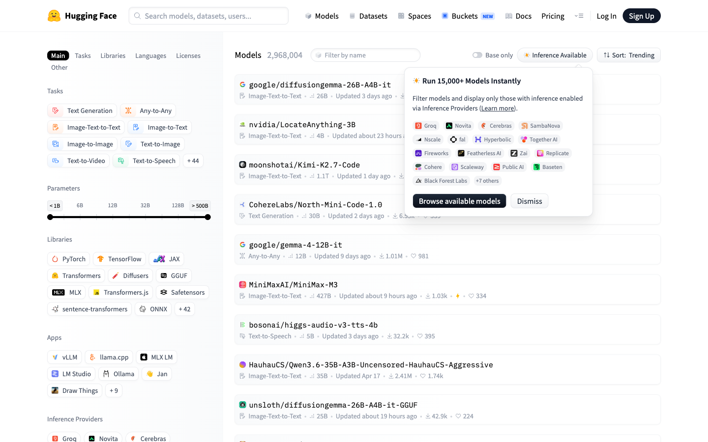
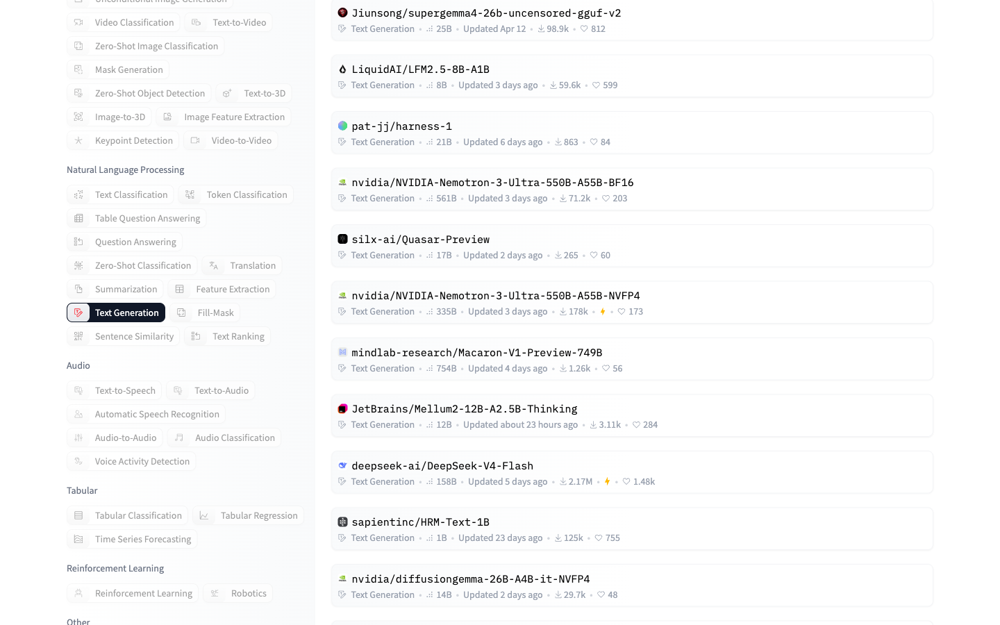
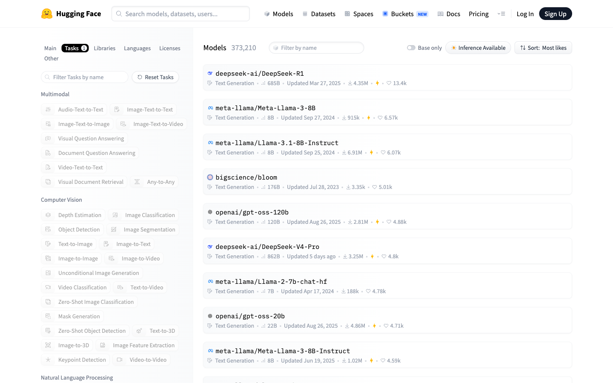
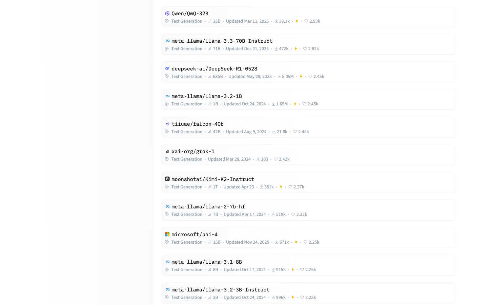
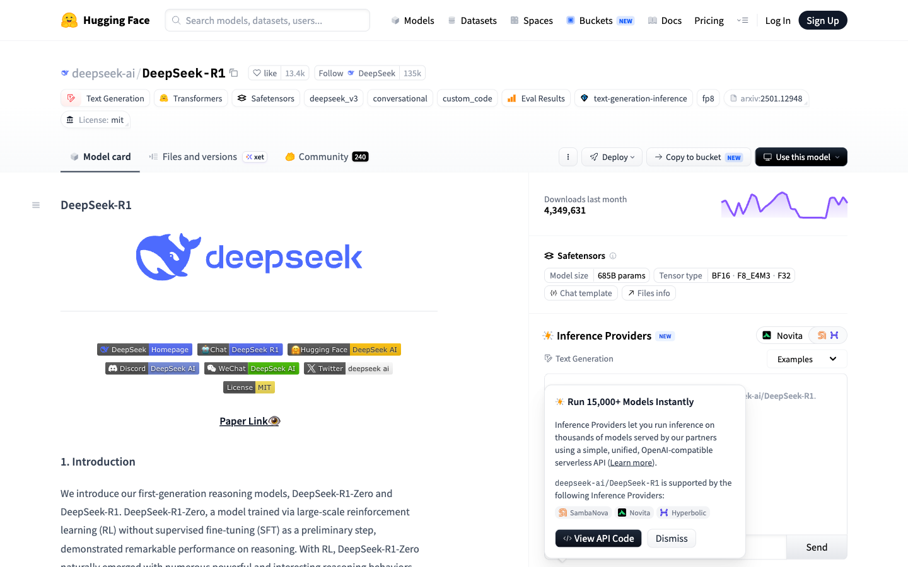
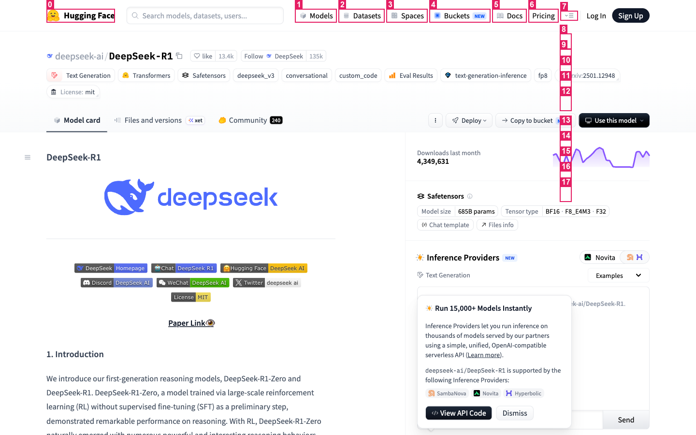
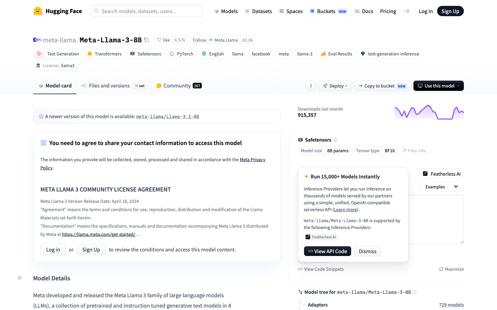
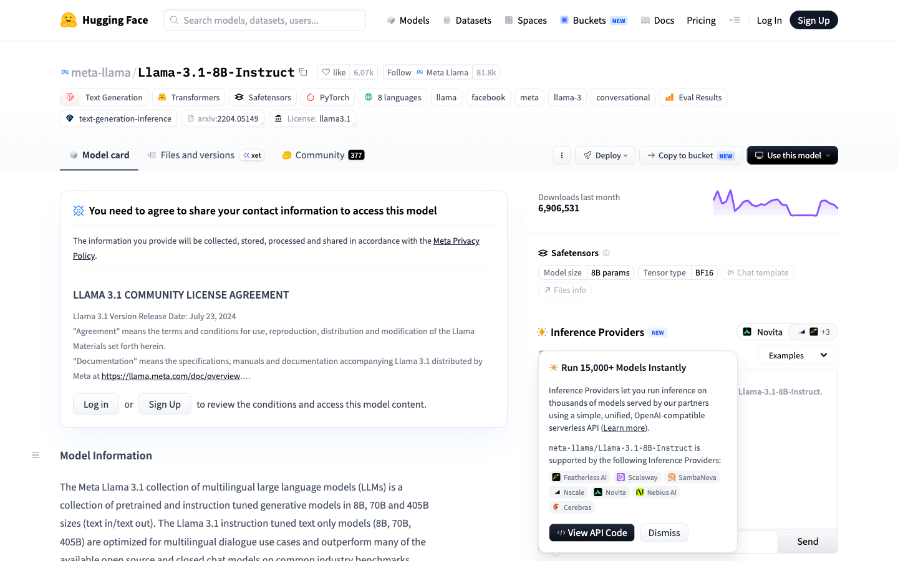

run-20260613-154310 · plan source llm · primary path extractflowchart TD
research["Resolve candidate URLs<br/><i>researcher</i>"]
browse["Interact (filter/sort/open) + extract via cheapest path<br/><i>browser</i>"]
distill["Normalise into comparison rows<br/><i>distiller</i>"]
qa["Validate (complete? ranked? correct task?)<br/><i>qa</i>"]
report["Assemble replay viewer<br/><i>report</i>"]
research --> browse
browse --> distill
distill --> qa
qa --> report
Primary data path: extract Paths exercised: deterministic extract a11y vision
| Intent | Chosen | Cascade ladder (cheap → costly) |
|---|---|---|
| filter: Text Generation task | deterministic | deterministiccss a[href*='pipeline_tag=text-generation'] |
| open sort menu | deterministic | deterministiccss button:has-text('Trending') |
| sort: Most likes | deterministic | deterministiccss text=Most likes |
| listing: top-3 model ids (sorted by Most likes) ⭐ | extract | extractlist[3] |
| model detail fields: deepseek-ai/DeepSeek-R1 ⭐ | extract | extractdict{id,likes,downloads_last_month,downloads_all_time,pipeline_tag,library} |
| a11y capability check: likes for deepseek-ai/DeepSeek-R1 | a11y | a11yread 13.4k via role=button[3] |
| vision capability check: likes for deepseek-ai/DeepSeek-R1 | vision | visionset-of-marks LLM read likes=13387 |
| model detail fields: meta-llama/Meta-Llama-3-8B ⭐ | extract | extractdict{id,likes,downloads_last_month,downloads_all_time,pipeline_tag,library} |
| model detail fields: meta-llama/Llama-3.1-8B-Instruct ⭐ | extract | extractdict{id,likes,downloads_last_month,downloads_all_time,pipeline_tag,library} |
| # | Action | Path | Target | Detail | URL |
|---|---|---|---|---|---|
| 1 | navigate | n/a | https://huggingface.co/models | open models listing | huggingface.co/models |
| 2 | click | deterministic | expand Tasks facet | reveal hidden filter list | huggingface.co/models |
| 3 | click | deterministic | filter: Text Generation task | a[href*='pipeline_tag=text-generation'] | huggingface.co/models?pipeline_tag=text-generation&sort=trending |
| 4 | click | deterministic | open sort menu | button:has-text('Trending') | huggingface.co/models?pipeline_tag=text-generation&sort=trending |
| 5 | click | deterministic | sort: Most likes | text=Most likes | huggingface.co/models?pipeline_tag=text-generation&sort=likes |
| 6 | scroll | n/a | 1600 | huggingface.co/models?pipeline_tag=text-generation&sort=likes | |
| 7 | navigate | n/a | https://huggingface.co/deepseek-ai/DeepSeek-R1 | open model detail #1 | huggingface.co/deepseek-ai/DeepSeek-R1 |
| 8 | navigate | n/a | https://huggingface.co/meta-llama/Meta-Llama-3-8B | open model detail #2 | huggingface.co/meta-llama/Meta-Llama-3-8B |
| 9 | navigate | n/a | https://huggingface.co/meta-llama/Llama-3.1-8B-Instruct | open model detail #3 | huggingface.co/meta-llama/Llama-3.1-8B-Instruct |








| t(s) | URL | Title | Note |
|---|---|---|---|
| 13.782 | huggingface.co/models | Models – Hugging Face | landing (default sort) |
| 24.392 | huggingface.co/models?pipeline_tag=text-generation&sort=likes | Text Generation Models – Hugging Face | filtered + sorted listing |
| 29.654 | huggingface.co/deepseek-ai/DeepSeek-R1 | deepseek-ai/DeepSeek-R1 · Hugging Face | model page: deepseek-ai/DeepSeek-R1 |
| 34.029 | huggingface.co/meta-llama/Meta-Llama-3-8B | meta-llama/Meta-Llama-3-8B · Hugging Face | model page: meta-llama/Meta-Llama-3-8B |
| 37.219 | huggingface.co/meta-llama/Llama-3.1-8B-Instruct | meta-llama/Llama-3.1-8B-Instruct · Hugging Face | model page: meta-llama/Llama-3.1-8B-Instruct |
[
{
"rank": 1,
"id": "deepseek-ai/DeepSeek-R1",
"url": "https://huggingface.co/deepseek-ai/DeepSeek-R1",
"source_path": "extract",
"card_text": "deepseek-ai/DeepSeek-R1 Text Generation \u2022 685B \u2022 Updated Mar 27, 2025 \u2022 4.35M \u2022 \u2022 13.4k",
"likes": 13387,
"downloads_last_month": 4349631,
"downloads_all_time": 27738105,
"pipeline_tag": "text-generation",
"library": "transformers",
"license": "mit",
"params": "685B",
"last_modified": "2025-03-27",
"created_at": "2025-01-20",
"tags": [
"transformers",
"safetensors",
"deepseek_v3",
"text-generation",
"conversational",
"custom_code",
"arxiv:2501.12948",
"license:mit",
"eval-results",
"text-generation-inference"
],
"likes_a11y": 13400,
"likes_vision": "13387"
},
{
"rank": 2,
"id": "meta-llama/Meta-Llama-3-8B",
"url": "https://huggingface.co/meta-llama/Meta-Llama-3-8B",
"source_path": "extract",
"card_text": "meta-llama/Meta-Llama-3-8B Text Generation \u2022 8B \u2022 Updated Sep 27, 2024 \u2022 915k \u2022 \u2022 6.57k",
"likes": 6572,
"downloads_last_month": 915357,
"downloads_all_time": 42926383,
"pipeline_tag": "text-generation",
"library": "transformers",
"license": "llama3",
"params": "8.0B",
"last_modified": "2024-09-27",
"created_at": "2024-04-17",
"tags": [
"transformers",
"safetensors",
"llama",
"text-generation",
"facebook",
"meta",
"pytorch",
"llama-3",
"en",
"license:llama3"
]
},
{
"rank": 3,
"id": "meta-llama/Llama-3.1-8B-Instruct",
"url": "https://huggingface.co/meta-llama/Llama-3.1-8B-Instruct",
"source_path": "extract",
"card_text": "meta-llama/Llama-3.1-8B-Instruct Text Generation \u2022 8B \u2022 Updated Sep 25, 2024 \u2022 6.91M \u2022 \u2022 6.07k",
"likes": 6066,
"downloads_last_month": 6906531,
"downloads_all_time": 155915803,
"pipeline_tag": "text-generation",
"library": "transformers",
"license": "llama3.1",
"params": "8.0B",
"last_modified": "2024-09-25",
"created_at": "2024-07-18",
"tags": [
"transformers",
"safetensors",
"llama",
"text-generation",
"facebook",
"meta",
"pytorch",
"llama-3",
"conversational",
"en"
]
}
]
| # | Model | Likes | Downloads/mo | Params | License | Task | Updated |
|---|---|---|---|---|---|---|---|
| 1 | deepseek-ai/DeepSeek-R1 | 13,387 | 4.3M | 685B | mit | text-generation | 2025-03-27 |
| 2 | meta-llama/Meta-Llama-3-8B | 6,572 | 915K | 8.0B | llama3 | text-generation | 2024-09-27 |
| 3 | meta-llama/Llama-3.1-8B-Instruct | 6,066 | 6.9M | 8.0B | llama3.1 | text-generation | 2024-09-25 |
🏆 deepseek-ai/DeepSeek-R1 (13,387 likes)
deepseek-ai/DeepSeek-R1 is the clear community favourite with 13,387 likes, ahead of meta-llama/Meta-Llama-3-8B, meta-llama/Llama-3.1-8B-Instruct. The shortlist spans 8.0B–685B parameters across llama3, llama3.1, mit licenses, so the most-liked model is not necessarily the smallest or most-downloaded.
| Purpose | Model | In | Out | Cost |
|---|---|---|---|---|
| plan (demo) | claude-sonnet-4-6 | 295 | 135 | $0.00291 |
| research (demo) | claude-sonnet-4-6 | 60 | 57 | $0.00103 |
| vision:likes (demo) | claude-sonnet-4-6 | 1222 | 20 | $0.00397 |
| distill (demo) | claude-sonnet-4-6 | 118 | 75 | $0.00148 |
| qa (demo) | claude-sonnet-4-6 | 157 | 66 | $0.00146 |
ℹ️ LLM calls used the offline demo gateway (mocked responses); tokens & cost are estimated from listed prices. Set ANTHROPIC_API_KEY for live calls.
| Check | OK | Detail |
|---|---|---|
| collected models (target 3) | ✅ | 3 model(s) collected |
| every model has a likes value | ✅ | all present |
| correctly ranked by likes (descending) | ✅ | 13,387 ≥ 6,572 ≥ 6,066 |
| all models are 'text-generation' | ✅ | text-generation |
| cross-path likes agree (extract vs a11y/vision) | ✅ | extract=13,387 · a11y=13400 · vision=13387 |
All structural checks pass: the requested number of text-generation models were collected, correctly ranked by descending likes, with cross-path agreement between the static-extract and accessibility readings. The comparison is trustworthy for ranking by popularity.
Generated by browser-agent · llm_gatewayV9 / Session9Code · open trace.zip with playwright show-trace for frame-by-frame replay.